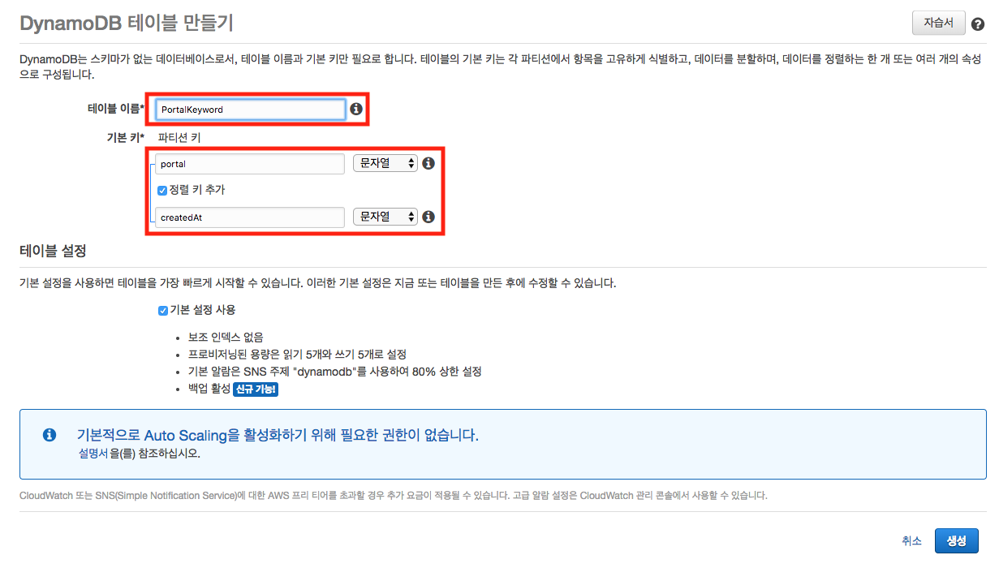

본 포스팅은 2018년 9월 29일과 12월 1일에 진행된 김승호님의 "Python Serverless" 코드랩에서 사용되었던 자료입니다.
DynamoDB 테이블 생성하기
DynamoDB를 설계할 시 주의해야할 점은 FAQ를 참고하시길 바랍니다.
이제 DynamoDB에 Todo table을 생성할 것입니다. 파티션 키와 정렬 키는 다음과 같이 설정합니다.
- 파티션키(Partition Key): portal
- 정렬키(Sort Key): createdAt
그럼 DynamoDB Console로 이동합니다. 테이블 만들기를 클릭하여 아래와 같이 테이블을 생성합니다.

Python 크롤링 시작하기
파일 트리는 다음과 같습니다.
environment
└── serverless-crawler : Crawler
├── crawler.py : Lambda에서 trigger하기 위한 handler가 포한됨 파일
├── lambda_test.py: lambda function test
├── zappa_settings.json : Zappa config file
└── requirements.txt : 개발을 위하 필요한 library 정보
먼저 터미널을 열어 serverless-crawler 디렉터리를 생성하고 각 파일들을 편집합니다.
(venv) ec2-user:~/environment $ mkdir serverless-crawler && cd serverless-crawler
serverless-crawler/requirements.txt
beautifulsoup4==4.6.3
pynamodb==3.3.1
zappa==0.46.2
python은 requirements.txt 에 개발에 필요한 라이브러리를 기술합니다.
사용하는 라이브러리는 다음과 같습니다.
- beautifulsoup4: python web scrape 라이브러리
- pynamodb: DynamoDB를 사용하기 쉽도록 Modeling하는 도구
- zappa: python serverless framework
requirements.txt에 있는 라이브러리들을 설치 합니다.
(venv) ec2-user:~/environment/serverless-crawler $ pip install -r requirements.txt
serverless-crawler/zappa_settings.json
zappa 를 init 하면 zappa_settings.json 파일이 생성됩니다.
(venv) ec2-user:~/environment/serverless-crawler $ zappa init
...
What do you want to call this environment (default 'dev'): dev
...
What do you want to call your bucket? (default 'zappa-gpz692isv'): 아무것도 입력하지 않음
...
Where is your app's function?: crawler
...
Would you like to deploy this application globally? (default 'n') [y/n/(p)rimary]: n
...
Does this look okay? (default 'y') [y/n]: y
...
zappa_settings.json 을 아래처럼 변경하여 저장합니다.
{
"dev": {
"aws_region": "ap-northeast-2",
"profile_name": "default",
"project_name": "python-serverless-crawler",
"runtime": "python3.6",
"s3_bucket": "ZAPPA_GENERATED_S3_BUCKET",
"apigateway_enabled": false,
"keep_warm": false,
"lambda_description": "Python Serverless Crawler",
"lambda_handler": "crawler.lambda_handler",
"memory_size": 128
}
}
serverless-crawler/crawler.py
import datetime
import requests
from bs4 import BeautifulSoup
from pynamodb.models import Model
from pynamodb.attributes import UnicodeAttribute, ListAttribute
class PortalKeyword(Model):
"""
A DynamoDB Keyword
"""
class Meta:
table_name = "PortalKeyword"
region = 'ap-northeast-2'
portal = UnicodeAttribute(hash_key=True)
createdAt = UnicodeAttribute(range_key=True)
keywords = ListAttribute()
def naver_keywords_crawler():
created_at = datetime.datetime.utcnow().isoformat()[:19]
naver_keywords = []
try:
naver_resp = requests.get('https://www.naver.com/')
naver_soup = BeautifulSoup(naver_resp.text, 'html.parser')
for i, tag in enumerate(naver_soup.find_all('span', {'class':'ah_k'})[:20]):
rank = i+1
keyword = tag.get_text()
naver_keywords.append({'rank': rank, 'keyword': keyword})
keyword_item = PortalKeyword('naver', created_at)
keyword_item.keywords = naver_keywords
keyword_item.save()
except Exception as e:
print(e)
return None
return naver_keywords
def daum_keywords_crawler():
created_at = datetime.datetime.utcnow().isoformat()[:19]
daum_keywords = []
try:
# daum 의 실시간 검색어 크롤러를 작성해 보세요.
return True
except Exception as e:
print(e)
return None
return daum_keywords
def lambda_handler(event, context):
naver_result = naver_keywords_crawler()
daum_result = daum_keywords_crawler()
# print(naver_result)
# print(daum_result)
if naver_result and daum_result:
return 'success'
else:
return 'error'
serverless-crawler/lambda_test.py
from crawler import lambda_handler
print(lambda_handler(None, None))
터미널에서 테스트 코드를 실행시켜 봅니다.
(venv) ec2-user:~/environment/serverless-crawler $ python lambda_test.py
success
DynamoDB Console에 들어가서 성공적으로 항목들이 생성되었는지 확인합니다.
Cloud9에서 배포하기
Zappa deploy
(venv) ec2-user:~/environment/serverless-crawler $ zappa deploy dev
Calling deploy for stage dev..
Downloading and installing dependencies..
- sqlite==python36: Using precompiled lambda package
Packaging project as zip.
Uploading python-serverless-crawler-dev-1538136485.zip (5.8MiB)..
100%|██████████████████████████████████████████████████████████████████████████████████████████████████████████████████████████████████████████████████████████████████████████████████████████████████████| 6.13M/6.13M [00:01<00:00, 3.48MB/s]
Deployment complete!
(venv) ec2-user:~/environment/serverless-crawler $
정상적으로 deploy 되었으면, Lambda Console 에서 새로 생성된 python-serverless-crawler-dev 함수를 확인 할 수 있습니다.
Zappa invoke
invoke 를 해봅니다.
(venv) ec2-user:~/environment/serverless-crawler $ zappa invoke dev
Calling invoke for stage dev..
[START] RequestId: XXXXXXX-.... Version: $LATEST
[END] RequestId: XXXXXXX-....
[REPORT] RequestId: XXXXXXX-....
Duration: 2274.70 ms
Billed Duration: 2300 ms
Memory Size: 128 MB
Max Memory Used: 47 MB
Zappa update
주기적으로 크롤링 하도록 함수를 update 를 해봅니다.
zappa_settings.json 에서 events 를 추가합니다.
serverless-crawler/zappa_settings.json
{
"dev": {
...
"apigateway_enabled": false,
"events": [
{
"function": "crawler.lambda_handler",
"expression": "rate(10 minutes)"
}
],
...
}
}
(venv) ec2-user:~/environment/serverless-crawler $ zappa update dev
Calling update for stage dev..
Downloading and installing dependencies..
- sqlite==python36: Using precompiled lambda package
Packaging project as zip.
Uploading python-serverless-crawler-dev-1538137619.zip (5.8MiB)..
100%|██████████████████████████████████████████████████████████████████████████████████████████████████████████████████████████████████████████████████████████████████████████████████████████████████████| 6.13M/6.13M [00:01<00:00, 3.51MB/s]
Updating Lambda function code..
Updating Lambda function configuration..
Scheduling..
Scheduled python-serverless-crawler-dev-crawler.lambda_handler with expression rate(10 minutes)!
Your updated Zappa deployment is live!
성공적으로 update 되었습니다. 지금부터 10분마다 주기적으로 DynamoDB에 검색어 랭킹이 쌓입니다.
리소스 삭제하기
서버리스 앱은 내리는 것이 어렵지 않습니다. 간단한 Command 하나면 모든 스택이 내려갑니다. Cloud9에서 새로운 터미널을 열고 다음과 같이 입력합니다.
(venv) ec2-user:~/environment/serverless-crawler $ zappa undeploy dev
Calling undeploy for stage dev..
Are you sure you want to undeploy? [y/n] y
Unscheduling..
Unscheduled python-serverless-crawler-dev-crawler.lambda_handler.
Deleting Lambda function..
Done!
IAM Console로 들어가서 오늘 생성한 관리자 사용자(python-serverless)를 삭제합니다.
S3 Console로 들어가서 Zappa가 생성한 버킷(zappa-XXXXXXXX)을 삭제합니다.
DynamoDB Console로 들어가서 Table을 삭제합니다. 리전은 서울입니다.
Cloud9 Console로 들어가서 IDE를 삭제합니다. 리전은 싱가포르입니다.